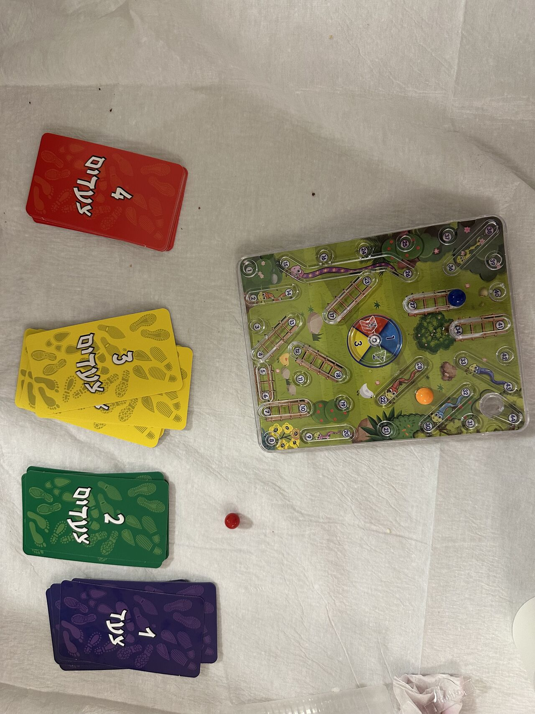
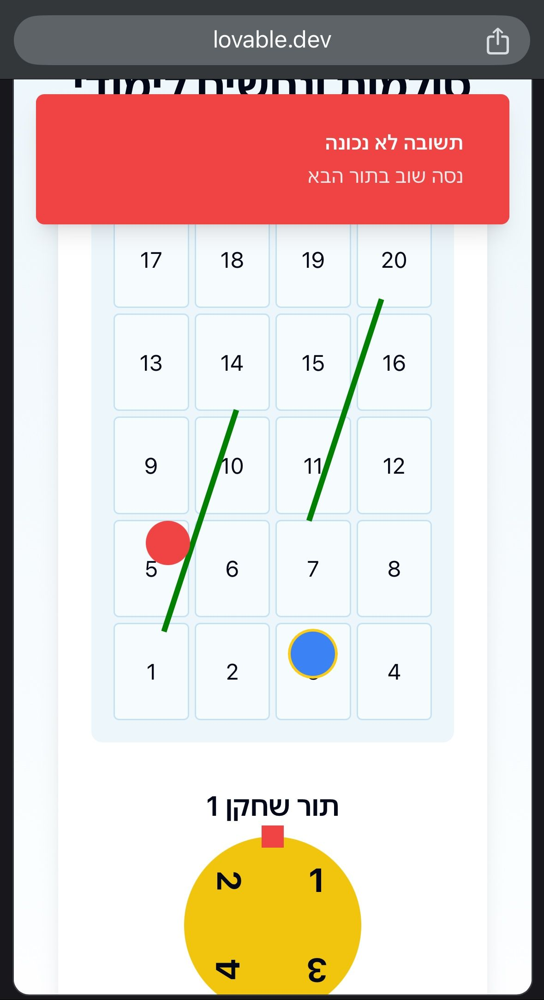

אתמול לפני ארוחת הערב הילדים שיחקו במשחק חמוד. סולמות וגנבים עם טויסט - מסובבים גלגל מזל שמצביע על בין 1 ל-4 ומרימים קלף עם שאלה ע
פורסם במקור ב LinkedIn
אתמול לפני ארוחת הערב הילדים שיחקו במשחק חמוד. סולמות וגנבים עם טויסט - מסובבים גלגל מזל שמצביע על בין 1 ל-4 ומרימים קלף עם שאלה על אותיות ומילים בעברית.
חשבתי לעצמי, הנה אתגר ל-AI, אצלם את המשחק, אסביר לו אותו כמו שהסברתי לכם הרגע, ואבקש שיבנה אותו.
אלה ההוראות שסיפקתי לו:
(צירפתי את התמונה שצירפתי כאן)
"בנה את המשחק הזה. סולמות ונחשים בגרסה מעט שונה - מסובבים גלגל מזל שמציג מספר צעדים שאפשר להתקדם מ1 עד 4, ואפשר להתקדם רק אם עונים נכון על שאלת קריאה בסיסית כמו איזה אות מגיעה לפני ט או שאלות בנושאים אחרים, אבל ברמה הזאת. בנה את זה לשני שחקנים."
שתי דקות אחרי, יש לי אתר עם משחק עובד, גלגל מזל מסתובב בלחיצה, טבלה עם סולמות ושחקנים, תורות, שאלות, ולוגיקת משחק מלאה.
נשאר לי רק לבקש לשפר את הנראות ובעשר דקות עבודה העתקתי משחק לוח למשחק דיגיטלי.
תראו בעצמכם:

